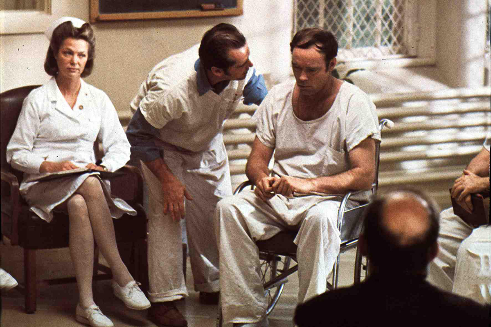
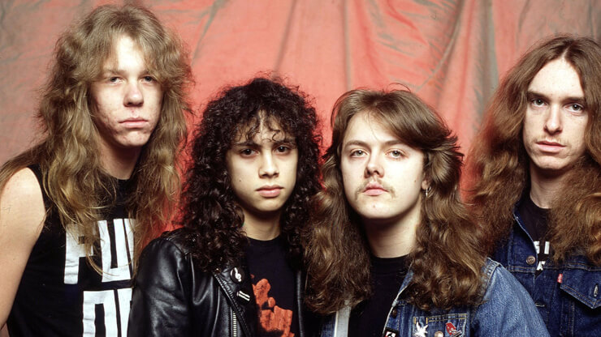

Master of Puppets es el tercer disco de estudio de Metallica.
El disco salió al mercado el 3 de marzo de 1986, bajo el sello
de Electra récords, alcanzando el puesto 29 en el Billboard 200.
El álbum fue el primer disco de oro de la banda tras vender 500 000
copias en Estados Unidos, aunque luego superaría las 6 millones.
Master of Puppets es el último álbum de Metallica en el que
Participa el bajista Cliff Burton, quien moriría en un trágico
accidente de autobús meses después del lanzamiento del disco.
Este recibió críticas muy favorables y es considerado un clásico
del thrash metal en general. Es considerado una de las mayores
influencias del thrash metal de todos los tiempos. El álbum en
el 2016 fue preservado en la Biblioteca del Congreso de Estados
Unidos, el álbum es el primer registro de metal que ingresa a
este archivo. Por su "significado cultural, artístico o histórico
a la sociedad"
El disco de Master of Puppets comienza con este clásico del thrash Metal. A la hora de analizar el significado de la canción hay muchas Formas de interpretarla.
El disco continua con Master of Puppets, canción que da nombre al disco
y “en mi opinión” una de las mejores canciones de Metallica y de toda la
historia del metal (Cliff Burton, señaló que esta era su canción
favorita de la banda). Desde su lanzamiento en 1986, ha sido tocada más
de 1500 veces en vivo, convirtiéndola en su canción más interpretada
en conciertos.
Esta canción, aunque no lo aparente, trata sobre la adicción a las drogas:
El “maestro”, también traducido como “amo”, es una referencia a las
drogas, que controlan al que las consume como si fuera, en efecto, una
marioneta. Este amo “distorsiona tu mente” y “destroza tus sueños”,
tal y como cuenta la canción.

Siguiendo con el disco llegamos a The thing that should not be. Este tema
se trata de tributo a la obra del escritor de terror-ciencia ficción de inicios
del siglo XX Howard Phillips Lovecraft, y como no podía ser de otra manera
habla de uno de los “monstruos” mas famosos de este autor el Cthulhu.
Cthulhu es un dios Primigenio que debutó en el relato La Llamada de Cthulhu,
publicado en 1928 en la revista Weird Tales.
Segun La llamada de Cthulhu esta entidad cósmica reposa en el interior de
la ciudad sumergida de R'lyeh, en el Pacífico Sur. El durmiente Cthulhu es,
al parecer, la fuente de la ansiedad constante de la humanidad, ya que es capaz
de contactar en sueños a los hombres y afectarlos a nivel subconsciente,
incitándolos a la devoción o al suicidio. A lo largo del tiempo, su capacidad
para aparecerse en sueños lo ha ido convirtiendo en objeto de culto de una
serie de religiones (que se encuentran mayormente en Nueva Zelanda,
Groenlandia, Louisiana y las montañas de China), así como de otros monstruos
lovecraftianos como los profundos y los mi-go. El relato afirma que, aunque
actualmente está atrapado, Cthulhu volverá algún día a caminar sobre la faz de la Tierra.
Welcome Home (Sanitarium) es la cuarta canción del álbum, está inspirada
en el libro de Ken Kesey One Flew Over the Cuckoo's Nest, en castellano
Alguien voló sobre el nido del cuco (que tuvo una adaptación al cine
protagonizada por Jack Nicholson).
La letra de la canción habla de estar encerrado en la locura, que
puede ser interpretado como estar encerrado en un manicomio.
A medida que avanza la canción, Hetfield va cantando cada vez
más agresivamente la letra, y las guitarras se orientan más hacia el
heavy metal, ya que la introduccióndel tema es mucho más suave
que el resto. El conjunto de la canción está guiado por una serie de
riffs oscuros y pesados que concuerdan a la perfección con la letra
depresiva de la canción.
Como ya he comentado anteriormente, esta canción nos cuenta la
historia de una persona que está ingresando en un hospital
psiquiátrico y es recibido por uno de los internos, un convicto que se
"hizo el loco" literalmente para que lo metieran en un hospital
psiquiátrico en lugar de ir a la cárcel. En el libro la historia es narrada
por otro paciente del hospital llamado Jefe Bromdem, un indígena
americano quien finge ser sordo-mudo para alienarse por cuenta
propia de la realidad.

McMurphy llega al psiquiátrico para cumplir su condena para
conseguirse en un lugar estricto y monótono, donde maltratan a
los pacientes, les obligan a tomar medicinas y los amarran, pero a
pesar de eso ninguno desea irse, entre otras cosas por miedo a lo
que hay afuera. En la canción se plasma de forma majestuosa el
tono de los pensamientos de McMurphy, cada vez más enojado,
con pensamientos más violentos y deseando "liberar" a sus
compañeros, organiza motines y soborna a los guardias para
que permitan la entrada de licor y prostitutas para desafiar a
las autoridades, especialmente a la enfermera Ratched, hasta que
un día agrede a esta última físicamente enviándola al hospital.
No voy a revelar el resto para no estropear el final a quienes
quieran leer el libro o ver la película.
La quinta canción del disco es Disposable Heroes o en
Español “Héroes Desechables”. La canción trata dobre la
guerra hablando desde el punto de vista de un soldado.
En la canción, el soldado describe los momentos mas duros
que sufre durante la batalla, en la cual no se siente a gusto.
Durante la canción el coro lo cantan en tercera persona,
representando los altos mandos militares que obligan a
los soldados a morir sin ninguna causa. Al final de la
canción el soldado se da cuenta de que su misión
simplemente es morir en batalla.
En fin, la canción es una dura crítica contra el servicio militar,
por supuesto estamos hablando de un país que mueve su
economía a través de la industria bélica y comienza guerras
para que esa "maquinaria" no se oxide, es un país donde
desde pequeño te dicen lo bueno que es "luchar por tu país
y por la democracia" y lo bueno y "divertido" de matar gente
en una guerra, de hecho hacen grandes esfuerzos en cuanto
a propaganda para mantener esa maquinaria engrasada con
sangre joven porque tener el "ejército más poderoso del
planeta" es lo que les garantiza dinero y supremacía mundial
a través de la intimidación.
Casi llegando al final del disco llegamos a este tema llamado
Lepper Messiah (en español “el mesias leproso). Esta canción
puede ser una de las mas personales del grupo ya que James
posee un odio muy grande hacia las religiones por culpa
de la muerte de su madre la cual no aceptó tratamiento
médico para curar el cáncer que padeció, por seguir al pie
de letra la doctrina de la Ciencia Cristiana (este tema se trata
mejor en la canción “The God That Failed”.
“Leper Messiah” es una crítica muy fuerte hacia todos
aquellos movimientos que usan la fe como un medio para
engañar a personas y sacarles su dinero; esos pastores que
se hacen llamar evangélicos ofreciendo a través de
programas de televisión la salvación a cambio de unos
cuantos dólares. Hetfield habla del engaño, de cómo estos
charlatanes manipulan a hombres y mujeres que necesitan
de alguien que les devuelva la fe, que les brinde la
posibilidad de salvarse de los pecados; estos
aprovechadores de oficio los invitan a dejar el diezmo
todas las semanas, así garantizarán un lugar en el cielo.
El título de la canción puede tener muchas interpretaciones,
podría simplemente tomarse como “Hombre Infectado que
dice hablar en nombre de Dios”; pero también se puede
referir a “Simón el leproso” que aparece en el Evangelio de
Mateo (26:6-13) y el Evangelio de Marcos (14:3-9), que
también es identificado como Simón el Fariseo.
Continuando con el disco llegamos a la pieza instrumental de esta. En este tema instrumental, como en The Call of Ktulu, Cliff Burton demuestra su creatividad y su peculiar uso de la distorsión eléctrica y las armonías al bajo eléctrico en una época en la que la trascendencia del instrumento en el thrash metal no era muy grande. Orion, es como un himno, visto que fue la pieza que se escuchó en el entierro de Burton.
El disco termina con uno de los temas mas rápido y “Thrash”
de Metallica, “Damage inc.”. Cliff Burton fue uno de los pilares
fundamentales de este tema, su genialidad no tuvo límites, y
aquí podemos ver un poco de la grandeza de este músico.
Decidió grabar varias líneas de bajo inspiradas en piezas
de Sebastian Bach para la intro de la obra.

A la hora de analizar la canción, esta habla de que todos
Somos presos de una sociedad, la que parece ser el
abreboca de lo que encontraremos en su próximo álbum
“… And Justice for All”, un disco donde en cada tema hay
una crítica a la forma en como están viviendo las
sociedades, bajo sistemas corrompidos, y en algunos
casos destructivos, amenazando con el futuro del hombre
y demás seres vivos en la Tierra.
Master of puppets es uno de los mejores discos del metal sin
ninguna duda; personalmente no sabria si decir si es mi disco favorito de
metallica, ya que yo creo que esta a la par de Ride The Lightning.
En este disco llegan a su cumbre creativa; en mi opinión a partir
de este disco la calidad empieza a descender, esto no significa
que lo siguiente sea malo, pero no tiene ni punto de comparación
con este disco.
Por otro lado, las letras de las canciones, como ya hemos visto, tratan
sobre un amplio abanico de temas que tienen una gran importancia para
el grupo. Yo creo que esto es uno de los puntos fuertes del disco; ya que
al escuchar las canciones no solo te quedas con las melodías o la agresividad
de algunos riffs, sino que también captas el mensaje que quieren trasmitir.
Mi valoración final del disco es un 10 por cosas como las letras, los riffs,
los ritmos desenfrenados, etc. Si tendría que ordenar las canciones en un
orden sin ninguna duda la primera seria Master of Puppets, ya que esta canción
tiene de todo (ritmos lentos, armonias, riffs agresivos y uno de los mejores solos
de la historia). La segunda seria Welcome home, la mejor power ballad de metallica lo mejor
de la canción es como progresivamente la canción cada vez
es mas rápida y agresiva. La tercera Disposible Heroes, por su mensaje y agresividad; después
Damage inc. seria la la cuarta; y acontinuacion les seguiría Orion, the
thing that sould not be y por ultimo Leper Messiah.